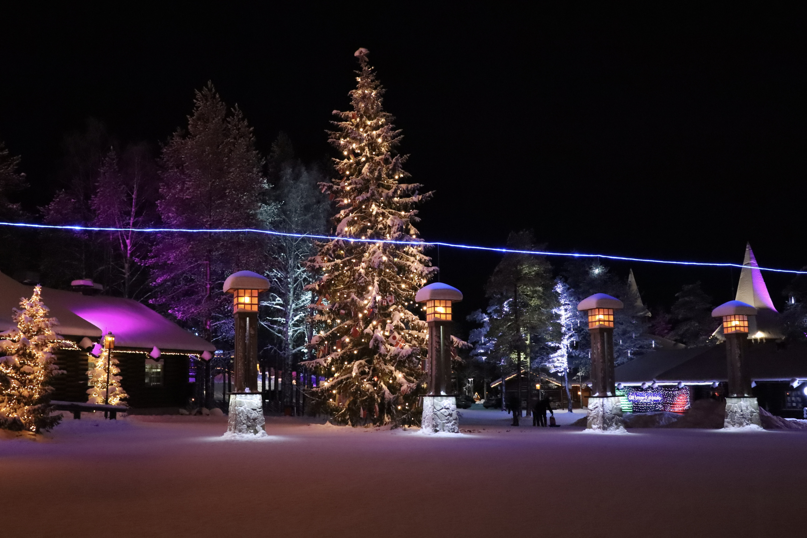
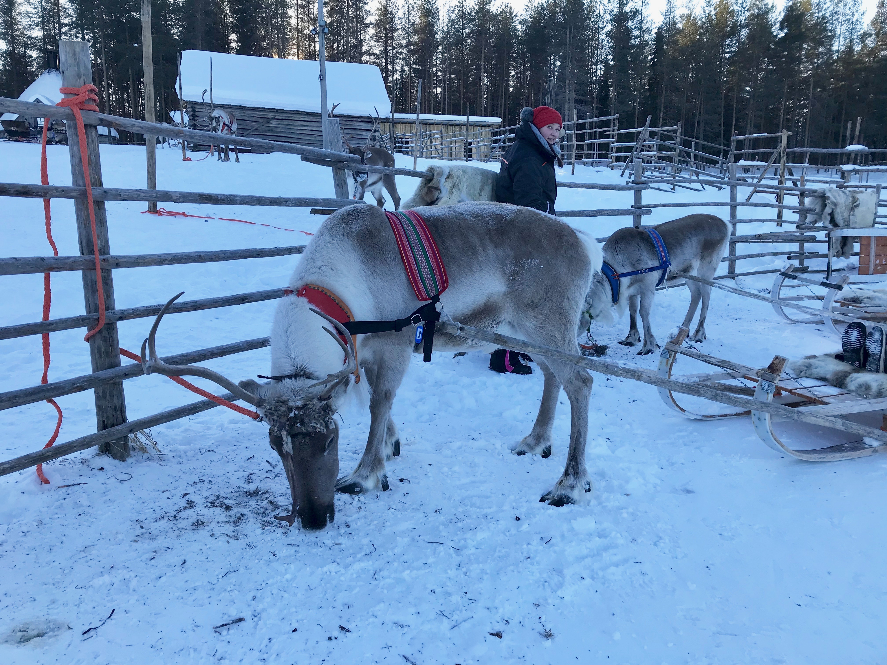
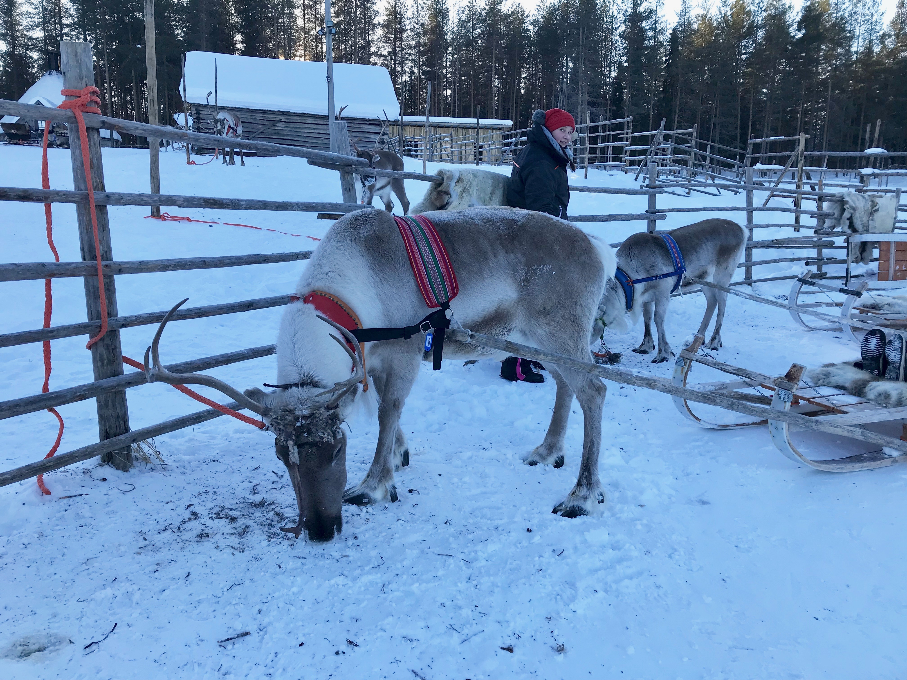

I went to Finland, three months, but most particularly in Lapland, during my second year internship. In fact, I did my internship in the Artic Circle Information based in Rovaniemi,
most particularly based in the Santa Claus Village.
Lapland and Rovaniemi, are well known for being touristic regions.
Rovaniemi is known to be the official home of Santa Claus.
Indeed, at a few kilometres from the centre of Rovaniemi not only you can find the Santa Claus village situated on the imaginary Arctic Circle line, but also the Santa Park.
On the other side of the river, there is the Ounasvaara ski resort based on the Ounasvaara mountain.
Santa Claus' village is Lapland's most famous attraction and a holiday destination in its own right. It is home to about 50 attractions that take the form of entertainment companies, restaurants and cafés.
There are many activities to do, such as dog sledding and reindeer rides, snowmobile rides, creating objects and souvenirs, ice and snow constructions and even staying in an igloo hotel.
In Rovaniemi, Lapland, the Polar Circle passes through Santa Claus' Village, located eight kilometres north of the city centre, where it is clearly marked. Santa Claus' Village is a popular place to cross the Polar Circle: here the line is marked and even a certificate confirming the achievement can be acquired.

The culture of Finland and Lapland, due to its geographical position in the world, stands out from the European countries like for example England or France.
Temperatures in winter can go down to minus 30 degrees during several months and the day light is very short. Indeed, during this time the sun only appears two or three hours per day.
Nature, culture and sports are an important part of Finnish life. In some cases, when people finish work early, they usually focus on their hobbies.
Skiing, ice fishing and hiking are one of the most popular winter’s sports in Finland.
The reindeer is the emblem of Lapland, and it is present in very large numbers in the region. For the Lappish people, reindeer herding is an ancestral activity.
Reindeers are semi-domesticated, that means that each reindeer has an owner.
Lapland is known for its beautiful unspoilt nature. This reflects in the traditional local cuisine, which draws its sources from green forests, lakes...The typical ingredients are reindeer, fish, game, wild herbs and fruits. Traditional Lappish cuisine is as tasty in a gourmet restaurant as it is in the middle of a campfire.
In Rovaniemi, you can have the possibility to do a lot of activities such as activities with huskies and reindeers, ice fishing, snowshoes, activities with the snowmobile...
Indeed, during these three months, I had the opportunity to enjoy these wonderful experiences.
Lapland is the perfect destination to witness one of nature's most spectacular phenomenos – the Northern Lights. On average the Aurora Borealis appear in the sky about 200 times a year.
I had this incredible chance to see them, it was the best experience I ever had, it was just amazing and powerful.
 

I had also the chance to participate to the Icebreaker Tour. The Polar Explorer Icebreaker offer a 3h Icebreaker cruise in the frozen water of Bothnian sea in Lapland.
During this short trip, I was able to enjoy the wonderful landscapes that surrounded me, I was able to walk on a frozen sea during the stop.
And I was able to swim in the dark icy water in floatation survival suit.
Far in the north, almost 200 kilometres above the Arctic Circle lies a truly unique destination and a magical world made from snow and ice.
The Lainio SnowVillage consists of Game Of Thrones themed Snow Hotel with snow rooms and suites, Ice Restaurant and Ice Bar.